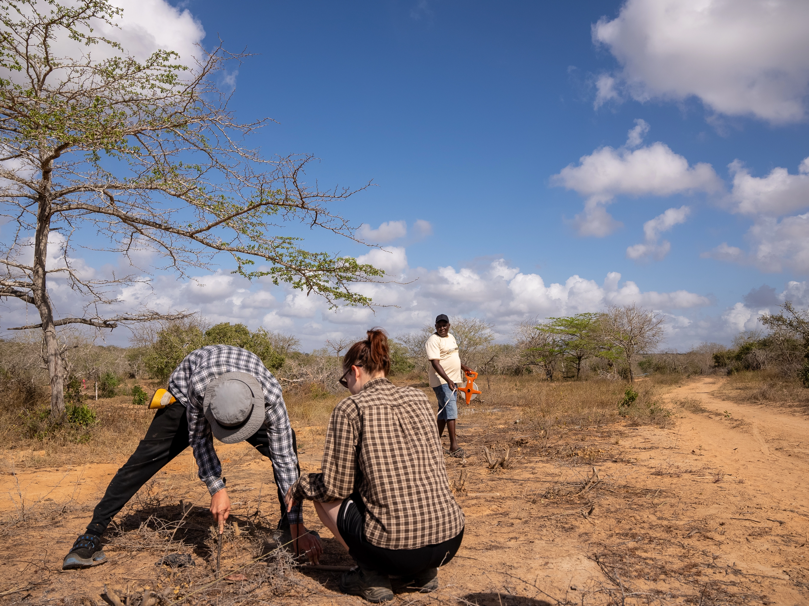

What We Deliver

High Quality Tree Seedlings
We produce healthy, climate-resilient tree seedlings tailored for restoration, commercial forestry, agroforestry, landscaping, and conservation initiatives.
Our nursery systems are designed for strong root development, high survival rates, and adaptability across different ecological zones.

Consultancy & Management
We provide strategic consultancy for forestry, agroforestry, restoration, and land-use initiatives.
Our support covers planning, implementation systems, operational coordination, and long-term sustainability strategies.
Monitoring & operations
We develop and manage integrated forestry, agroforestry, and landscape restoration projects focused on sustainability, carbon outcomes, and long-term land productivity.
From planning and field execution to ongoing supervision and monitoring, we support projects through every stage to ensure reliable implementation and measurable impact.

Research & Innovation
Our research and innovation initiatives focus on improving plant performance, landscape resilience, and sustainable production systems. We explore practical solutions that enhance restoration outcomes while responding to changing climate conditions.
Through field trials, breeding programs, irrigation improvements, mechanisation, and adaptive land management practices, we continuously test and refine systems that increase efficiency, survival rates, and long-term sustainability.